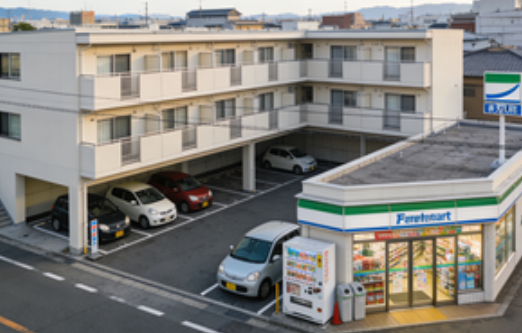

下京区（Shimogyo-ku）賃貸情報
下京区は京都市南部に位置し、京都駅を中心とする交通拠点エリア。京都駅ビル内には伊勢丹・高島屋などの大型百貨店やレストラン街があり、国内外の観光客が集まる繁華街として知られる。
区内には東本願寺・西本願寺といった世界遺産も存在し、歴史的景観と現代的な商業施設が混在するのが特徴。物件は京都駅直結の高層マンションから、住宅街の木造アパートまで多様で、通勤・通学に便利な立地から多くの人々が居住している。
下京区の特徴
- 特徴：京都駅を中心とする交通拠点・歴史スポットが混在
- メリット：交通利便性が極めて高い・商業施設が充実
- デメリット：賃料高騰・京都駅周辺は混雑する
- 賃料例：1K約65,000円〜、1LDK約90,000円〜、2LDK約120,000円〜
推奨物件タイプ

京都駅徒歩7分 1K：約68,000円。低層マンションの物件で、駐車場が付属。近隣にスーパーと病院があり生活しやすい。
烏丸五条駅徒歩5分 1LDK：約92,000円。築5年の物件で、エアコン・洗濯機などの家電が付属。東本願寺近隣で静かな環境。
京都駅直結マンション 2LDK：約150,000円。高層階の物件で、夜景が眺望できる。24時間管理体制があり安全性が高い。